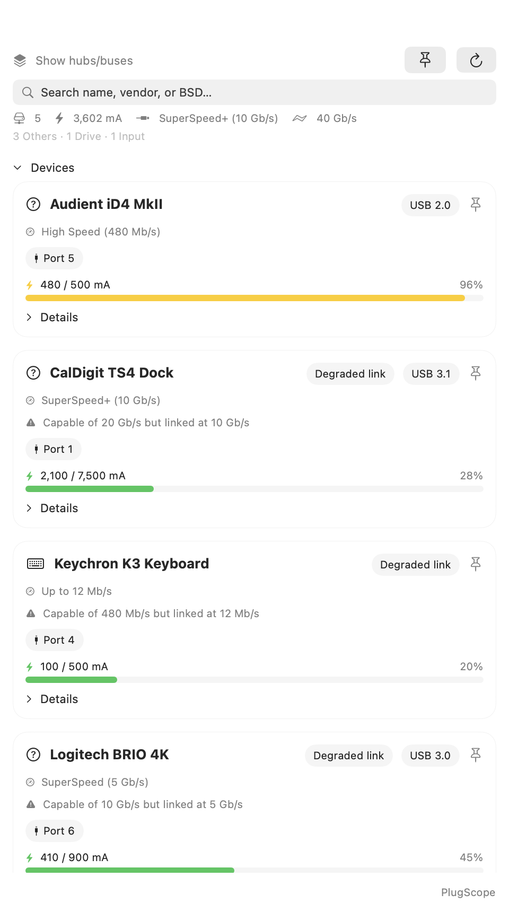
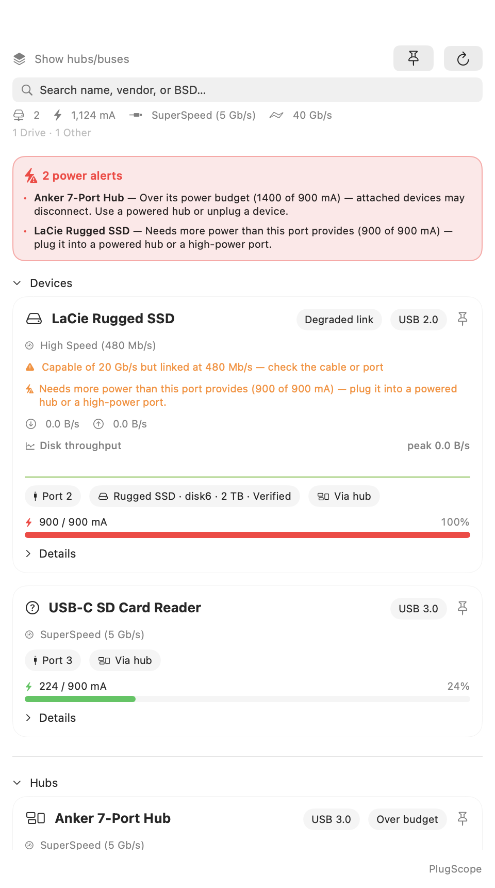
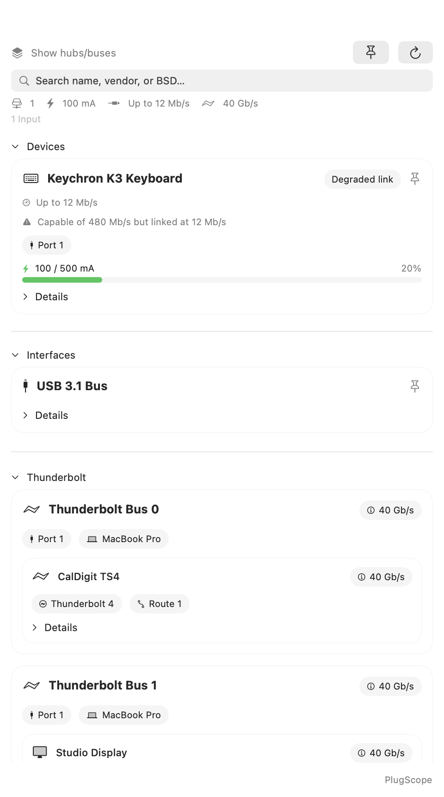
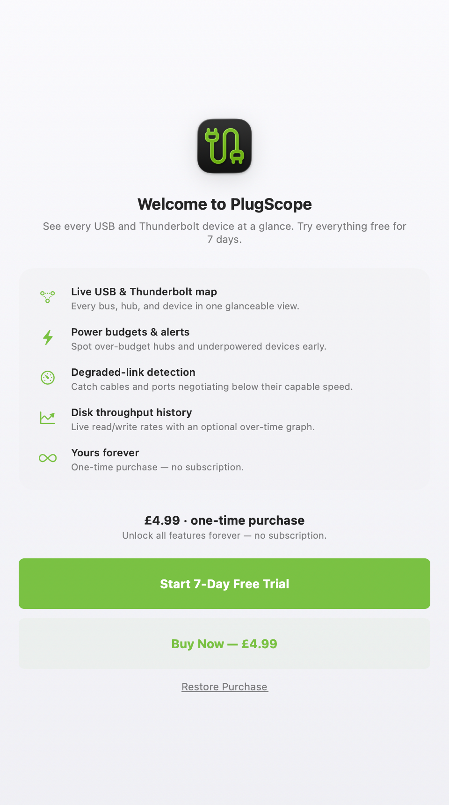

PlugScope for macOS
See every USB and Thunderbolt device at a glance: power budgets, link speeds, and live disk throughput, right from your menu bar. PlugScope maps and explains your Mac's USB and Thunderbolt topology (buses, hubs, devices, and attached storage) in one clean, glanceable view.
- Live USB & Thunderbolt topology in your menu bar
- Colour-coded power budget meters with over-budget alerts
- Degraded-link detection for underperforming cables & ports
- Disk read/write throughput with an optional history graph
- Thunderbolt / USB4 bus, mode & link-speed detail
One-time purchase: PlugScope Full Access unlocks every feature forever. No subscription.
Screenshots
Includes light and dark screenshots that follow the website theme.





Features
Modern Macs run a lot over a few ports: docks, SSDs, audio interfaces, cameras, card readers, displays. When something misbehaves (a drive that keeps dropping, a hub that can't power everything, a cable that quietly negotiates a slower link), the cause is usually invisible. PlugScope surfaces it.
- USB topology: Host controllers, hubs, and devices in a grouped, collapsible list.
- Power budget meter: A colour-coded bar (green → yellow → red) showing each device's draw against the available budget, with used / budget mA and percentage.
- Power alerts: Over-budget hubs and underpowered devices are flagged before they cause disconnects.
- Degraded-link detection: Spots devices capable of a faster link than they actually negotiated (e.g. a 20 Gb/s SSD linked at 480 Mb/s), so you can check the cable or port.
- Disk throughput: Read/write rates for storage devices, sampled from IOKit, with an optional throughput-over-time graph.
- Thunderbolt / USB4: Per-bus status, link speed, mode (TB3/TB4/USB4), LC version, switch UID/version, and vendor/device IDs.
- Dashboard summary: Device count, total power draw, fastest USB and Thunderbolt links, and a per-type breakdown.
- Human-readable storage: Disk, size, SMART status, partition scheme, and per-volume detail.
- Role classification: Devices tagged by role: storage, audio, input, camera, network, and more.
- Menu-bar native: Left-click for the popover, right-click for options; pin it open, toggle graphs, show hubs and buses, and launch at login.
Privacy
PlugScope reads device information locally via the system profiler and IOKit. Nothing is uploaded, and there are no accounts, ads, or trackers.
One-Time Purchase
PlugScope Full Access unlocks all features forever with a single one-time purchase, with no subscription. It's Family Sharing enabled, so your household is covered.
Built for Your Menu Bar
- Lightweight, native macOS menu-bar utility
- Light- and dark-mode aware, following your system appearance
- Reads locally via system profiler and IOKit, with no account, no ads, no tracking
- Pin the popover open, toggle graphs, and launch at login
Note: macOS exposes no per-device byte counters for USB/Thunderbolt traffic itself, so throughput reflects disk read/write activity, not raw bus traffic.